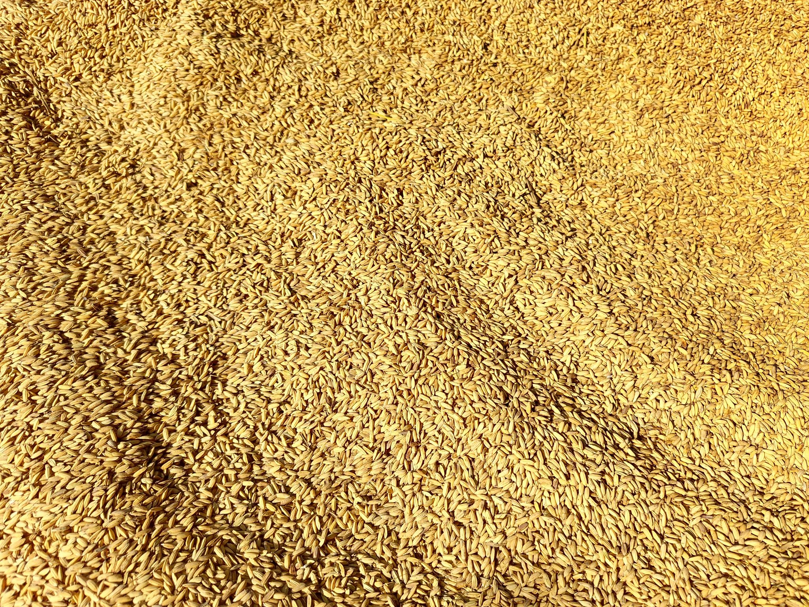

MENU
千年木のメニュー

掲載している写真はすべてイメージ素材です。実店舗のメニュー写真ではありません。出典・ライセンスはページ下部の「画像クレジット」をご確認ください。
玄米入り米粉、上白糖不使用、自家農園の野菜。千年木のメニューは、体に優しい素材を店主が一つひとつ手づくりしています。ご注文後にお作りするため、お時間に少しゆとりを持ってお楽しみください。

看板メニュー
玄米入り米粉 千年木カレーパン
少し硬めの生地は、白神天然酵母と国産小麦パン粉を使い、米油で揚げたもの。中には自家農園野菜がたっぷり詰まった、初めて食べる味わいのカレーパンです。スパイスは控えめで、お子様にも食べやすい味付けです。
その他のメニュー
※メニューの内容・提供状況は変更になる場合があります。写真はすべてイメージです。
アレルギー・食事対応のご案内
上白糖は使用していません。グルテンフリー、卵、乳製品を使わない対応についてはご相談により可能な場合があります。アレルギーや食事制限のある方は、ご来店前または来店時に店主へご相談ください。
価格についての参考情報
ご来店されたお客様からは、次のような一例が口コミで紹介されています。
- 千年木スムージー・カレーパン・ドーナツの組み合わせで900円前後
- 千年木スムージー(ブルーベリー)単品で410円
- 梅ソーダ・あんバターサンド・米粉ブラウニーの組み合わせで1000円
※上記はご来店されたお客様の一例としてご紹介する参考情報です。正式な価格表ではありません。価格は変更の可能性がありますので、詳細は店頭でご確認ください。
玄関先の野菜販売
玄関先では、店主のお父様が育てた野菜や高崎市産の野菜も販売しています。詳しくはご来店ガイドをご確認ください。